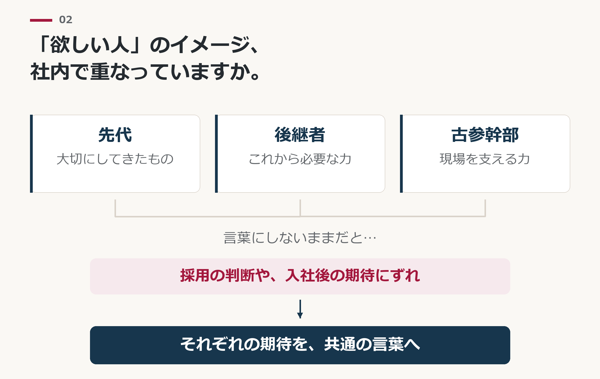

02 / THE STRUCTURE
なぜ、ファミリー企業の採用は、
一般企業と同じやり方では
変わりにくいのか。
求人媒体の担当者も、紹介会社も、採用のノウハウ本も、ほとんどが一般企業を前提に書かれています。
しかし、ファミリー企業の採用には、家族としての関係と経営上の役割が重なることで生まれる、固有の難しさがあります。
私たちは、その違いを5つに整理しています。
01
「欲しい人」を決める人が、一人ではない

一般企業でも、経営陣と現場の意見は食い違います。ファミリー企業では、そこに家族としての関係や、長年会社を支えてきた関係が重なります。
後継者には、これからの会社に必要な力が見えている。
古参幹部には、今の現場を支えるために欠かせない力が見えている。
双方の期待を言葉にしないまま採用を進めると、迎えた人への要求が食い違ってしまいます。
先代・後継者・古参幹部が、それぞれ何を期待しているのか。それを共有することが、採用の判断と入社後の期待をつなぐ出発点になります。
02
評価の基準が、家族の中の「暗黙知」になっている
「うちでは、こういう人が認められる」。
家族と古参社員の間では、言わなくても通じています。だから、誰も明文化してきませんでした。
その基準を知らないのは、新しく入った人だけです。
「聞いていた話と違う」
「何をすれば評価されるのか分からない」
和奏が定着支援で最初に見るのは、この「伝わっていない基準」です。
03
求職者の不安に、ファミリー企業ならではのものが加わる
仕事内容、待遇、人間関係。どの会社に応募する人も、同じ不安を抱えています。
ファミリー企業に応募する人は、それに加えてこう考えます。
「身内が優遇されるのではないか」
「社長の家族と、どう付き合えばいいのか」
「後継者の下で、自分に将来はあるのか」
この不安に答え、「そこで働く自分」を想像できる情報が、応募を後押しします。和奏は、その情報を求人に用意します。
04
強みもまた、ファミリー企業ならではの形をしている
何十年も続いてきたという事実。
経営者との距離の近さと、その覚悟。
地域との結びつき。
これらは経営者にとって当たり前すぎて、求人に書く価値があるとは思えません。
経営者自身には見えにくいからこそ、家族の歴史と会社の歩みが重なる事情を理解した上で、外から掘り起こす視点が要ります。
05
気づかないうちに、「先代の会社」の求人になっている
後継者が自分の言葉で理念を語れていないと、求人は先代の会社の求人になります。
求職者が見ているのは、会社の看板ではなく「この人についていけるか」です。
「社長の息子（娘）だから」ではなく、「この人だから」と言われる経営者であるか。
それは、後継者としての力量の問題ではありません。
先代が築いたものに、あなたがこれから何を加えようとしているのか。それが求職者に「伝わっているか」の問題です。
だからこそ、求人で変えることができます。
経済産業省が公表した「ファミリーガバナンス・ガイダンス」でも、家族と会社の関係を整理することは、同族企業の経営課題として位置づけられています。
採用は、その関係が最初に表に出る場面です。
だから、ファミリー企業の採用は、求人原稿の手直しだけでは変わりにくいのです。